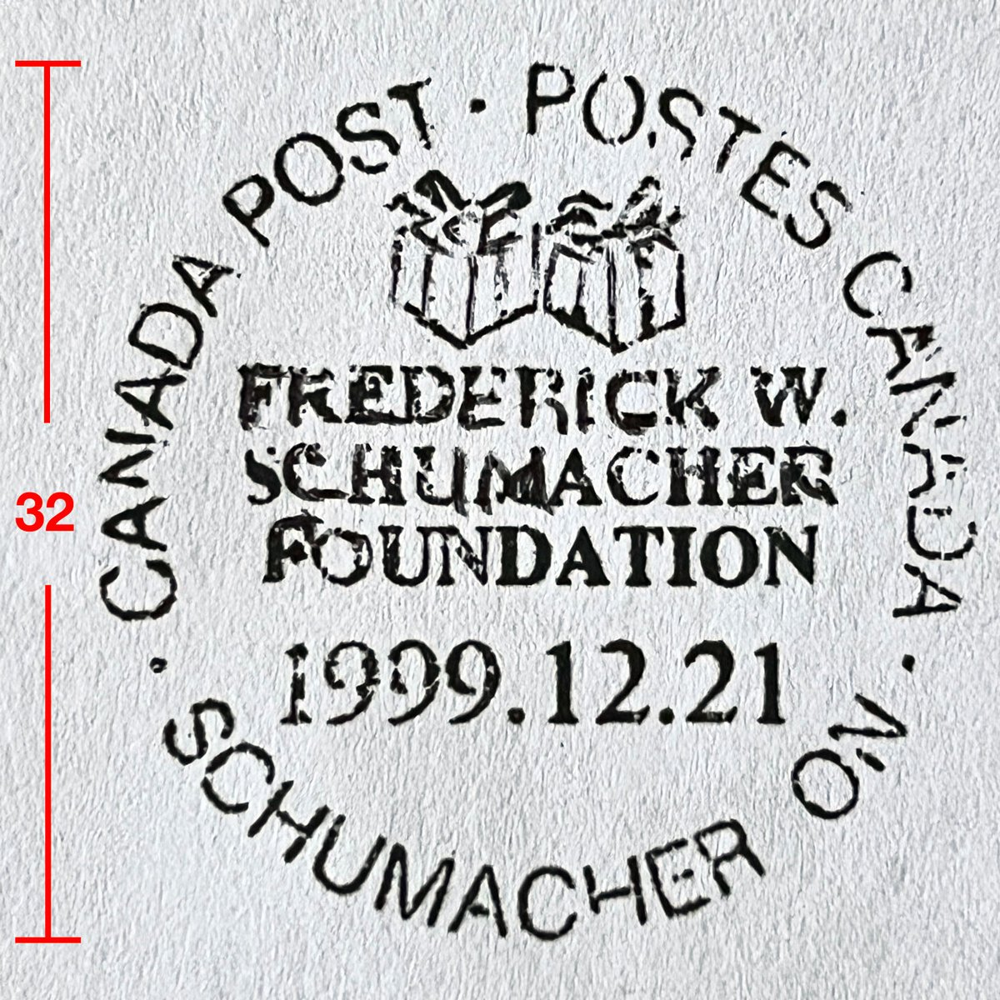

Schumacher PO pictorial cancel
Frederick W. Schumacher Foundation 1999.12.21 · Version 2
- Status
- Expired
- Run dates
- ? to ?
- Design
- "FREDERICK W. SCHUMACHER FOUNDATION 1999.12.21"; gift box
- Ink colour
- Black
- Designer
- Unknown
- Post office
- Schumacher PO
37 Father Costello Dr
Schumacher, ON
P0N 1G0 - Subjects
- gift box
This cancel is retired, so the post office can no longer apply it. Covers with it turn up from dealers and other collectors.
 Schumacher POVersion 1
Schumacher POVersion 1 Moonbeam POUFO monument
Moonbeam POUFO monument Wawa POWawa Goose Monument
Wawa POWawa Goose Monument Echo Bay POHome of the Loon Dollar Monument
Echo Bay POHome of the Loon Dollar Monument Tobermory PODolomite sea stacks shaped by erosion on Flowerpot Island
Tobermory PODolomite sea stacks shaped by erosion on Flowerpot Island Wiarton PO2nd Willie
Wiarton PO2nd Willie